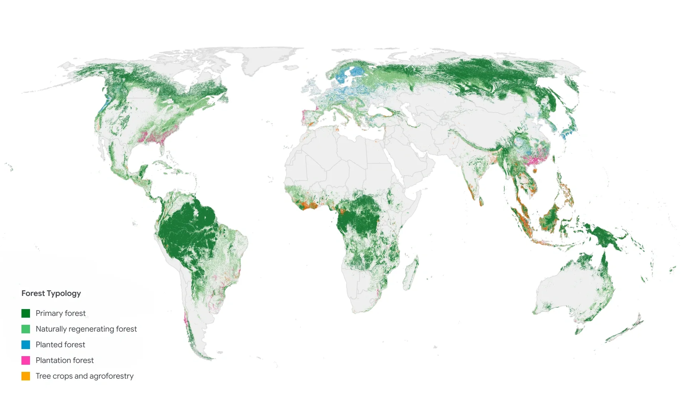

同樣一片綠，
AI 怎麼分辨
不同森林？
官方公布
論文發表 · 2020 地圖基線
看見樹，還不能確定這片土地怎麼被利用。ForTy將不同森林、人工經營林地與樹作物，放進同一張全球地圖。
2020地圖代表的土地狀態
不是研究公布年份
同樣都有樹，
形成方式與用途卻不同。
自然長回來的森林、種植木材的人工林、樹作物農地，從空中看都可能是綠色。選一種類型，對照地圖圖例並閱讀它的意思。

自然再生林
主要靠自然更新長回來的森林，包含許多不同的恢復階段。
年輕再生林與成熟次生林都可能屬於這一類，結構不一定相同。
選擇類型，原圖左下角的圖例會同步標示。其他土地以背景呈現，沒有獨立的圖例行。
外觀是線索，歷史也重要。
規律間距、樹齡、季節及過往變化，都可能提供判讀線索。影像能提供線索，經營歷史仍須搭配其他資料確認。
10公尺是網格大小。
它說明資料如何分格，不保證每個分類都正確，也不表示定位誤差小於10公尺。
從一片綠，
看到判讀的依據。
120秒動畫，先認識林地，再看多年衛星資訊、作者分類和獨立驗證。沒有聲音。
不播放，直接閱讀
先認識不同林地
自然長回來的森林、經營木材的人工林與樹作物土地，有不同的形成過程。動畫使用的五種影像來自不同地點，各自保留比例尺。
把多年資訊一起看
AlphaEarth先整理多來源、多期衛星特徵。ForTy從可靠例子學習，再擴大資料，並加入多年觀測資訊。
回到同一區域對照
澳洲東南部的衛星影像與分類圖對照相同位置。彩色圖是作者推估，並非另一年的森林或地面真值。
再用獨立資料核對
專家標註參與訓練，也另有獨立樣點用來驗證。全球整體準確率與各類F1分開呈現，沒有把全球數字貼成澳洲範例的準確率。
先從可靠例子學習
專家標註與既有參考資料，提供分類起點。
再擴大訓練資料
結合前階段推估、輔助資料與難例修正。
加入多年觀測
最後階段綜合2019至2024資訊，取出2020基線。
六種類型，
表現仍有落差。
以8190個完成專家共識的獨立樣點估計精度，還要分別看每種類型的表現。
全球六類整體準確率
90.22%
標準誤0.34個百分點，包含「其他土地」。大面積的其他土地，對整體值有很大影響。
- 原始抽樣
- 9100點
- 完成專家共識
- 8190點
- 尚未完成共識
- 738點
- 標為不確定
- 172點
專家主要判讀高解析影像、歷史觀測與輔助資料，不全部等於現地量測。738點與172點未納入精度估計；困難與過渡類型較常被排除，可能影響估計。不能解讀成每一地區或每一類都有九成準確率。
人工栽植林仍比較難分。
| 類型 | F1 |
|---|---|
| 原生林 | 82.9% |
| 自然再生林 | 72.6% |
| 人工栽植林 | 58.2% |
| 集約經營人工林 | 66.7% |
| 樹作物與農林混作 | 62.1% |
| 其他土地 | 96.4% |
論文表7，全球六類、共識驗證樣點。這些不是上方全球展示圖中每個位置的分數。模型給的相對信心，也不能直接當成某處判對的機率。
先分清森林類型，
再討論如何利用與保護。
地圖提供一致的判讀起點。難分的地方仍須核對經營歷史；森林類型也不直接等於碳量或生物多樣性。
日期、研究與圖片來源
何時公布，代表哪一年？
，Google DeepMind公布研究介紹。，論文發表於Scientific Data 13:1434。
ForTy 2020代表2020年基線。官方另有2017至2025早期時間序列，本頁不把2020驗證數字外推為逐年變化精度。
正式論文與資料
Neumann等人（2026），Global forest typology at 10-meter resolution for forest and land-use monitoring。